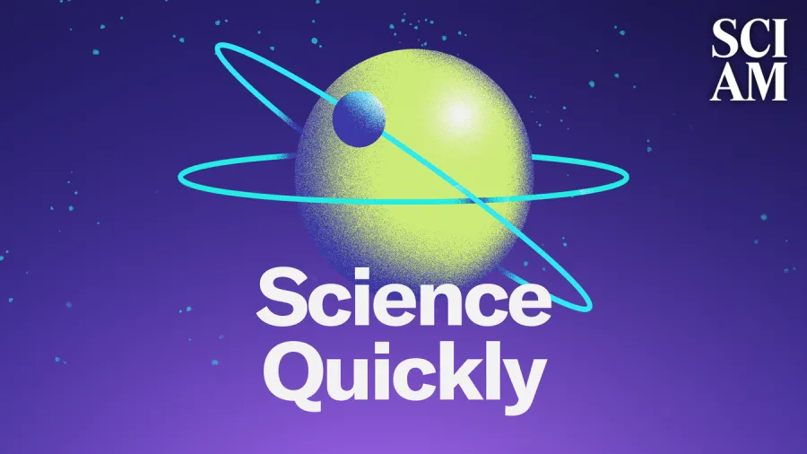

Tanya Berger-Wolf, director of the Imageomics Institute at The Ohio State University, was recently featured on Scientific American's podcast, discussing the transformative role of artificial intelligence (AI) in wildlife conservation.
In the episode titled "AI and Other Emerging Technologies Are Expanding Conservation Studies," Berger-Wolf highlighted how AI-driven technologies are revolutionizing ecological research. She emphasized how AI enables scientists to analyze vast amounts of visual data, such as photographs and videos, to monitor biodiversity and track animal populations more efficiently. This approach allows for non-invasive data collection, reducing the need for physical tagging or tracking of animals.
Berger-Wolf explained how AI algorithms can identify individual animals based on unique patterns and features, such as stripes or spots, facilitating more accurate population estimates and behavioral studies. She also discussed the collaborative nature of this work, involving computer scientists, ecologists, and citizen scientists who contribute to data collection through platforms like Wildbook.
The integration of AI into ecology is significant as it enhances the ability to monitor and protect endangered species, understand ecosystem dynamics, and respond to environmental changes more swiftly. Berger-Wolf's leadership at Ohio State positions the institution at the forefront of this interdisciplinary field, bridging technology and environmental science to address pressing conservation challenges.
The podcast episode features sheds light on the innovative applications of AI in conservation, underscoring the importance of technological advancements in preserving global biodiversity.